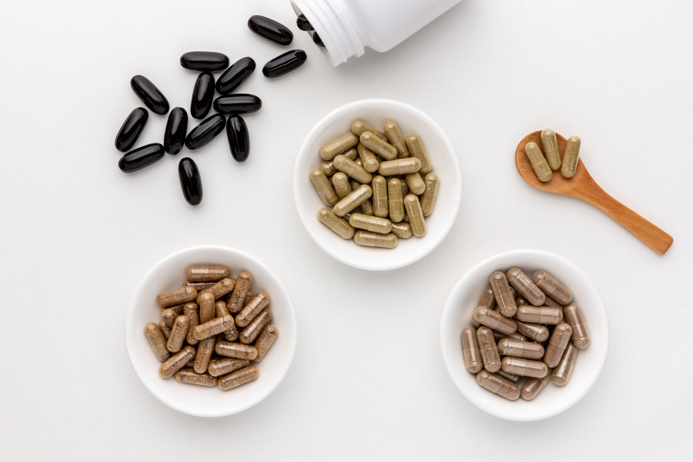

<div class="container-fluid">
<div class="row blog-row dropzone " id="dropzone2" (dragover)="allowDrop($event)" (drop)="drop($event)">
    <div class="blog-container" >
        <div>
            <h2 class="blog-heading">Blogs</h2>
        </div>

        <div class="row">
            <div class="col-md-9 col-12 main-blog-container">

                <div>
                    
                </div>

                <div class="blog-main-cc">
                    <div class="blog-sub-cc">

                    </div>

                </div>
                <div class="blog_CC">
                    <p class="blog-title-name">Guide to Bael Fruit: Benefits, Side Effects, Uses & More!
                    <p>
                        <span class="blog_update_date">JUN 14, 2023</span>

                    <div class="blog-content">
                        <p class="Comprehensive-Guide">A Comprehensive Guide on Bael Fruit</p>

                        <p class="Comprehensive-Guide-cc">According to animal studies, oral intake or injection of Bael
                            fruit extract might help to lower blood glucose and haemoglobin-bound glucose levels. It
                            might also help increase the level of insulin in the blood and might help the conversion of
                            glucose in the liver.2 Certain compounds (coumarins) present in the bael fruit extract might
                            help in the secretion of insulin from the liver, thus might be helpful in lowering blood
                            sugar levels.2 Furthermore, as per a clinical trial, lowering of blood cholesterol and
                            slight lowering of blood glucose might be possible in some patients with diabetes to whom
                            Bael leaf extract was administered.2 However, more research is required. Kindly consult a
                            doctor for seriosu conditions such as diabetes which must be diagnosed and treated by a
                            doctor.</p>

                        <p class="Significance">Significance of Bael Fruit</p>
                        <div>
                            <div >
                            
                            </div>

                            <p class="Significance-cc">The Indian summers are usually a medley of memories - the summer
                                vacations, the long-awaited visit to grandparents, and the soothing afternoon naps under
                                the water cooler. These memories are filled with the aroma of unique summer fruits that
                                made a cameo appearance. We agree that mango is the first thing that comes to mind when
                                we think of summer fruits, but how can we forget the humble Bael or Bel fruit? Most of
                                us found it repulsive because of the strong, pungent smell, but our mothers ensured we
                                had our seasonal regulated share of this summer coolant by mixing it with milk, sugar,
                                and whatnot! But as we learn more about the health benefits of this wonderful fruit, it
                                is no surprise that it is gaining much-deserved popularity.</p>
                        </div>

                        <div>
                            <p class="Significance">Benefits of Bael Fruit</p>
                            <p class="Significance-cc">The Indian summers are usually a medley of memories - the summer
                                vacations, the long-awaited visit to grandparents, and the soothing afternoon naps under
                                the water cooler. These memories are filled with the aroma of unique summer fruits that
                                made a cameo appearance. We agree that mango is the first thing that comes to mind when
                                we think of summer fruits, but how can we forget the humble Bael or Bel fruit? Most of
                                us found it repulsive because of the strong, pungent smell, but our mothers ensured we
                                had our seasonal regulated share of this summer coolant by mixing it with milk, sugar,
                                and whatnot! But as we learn more about the health benefits of this wonderful fruit, it
                                is no surprise that it is gaining much-deserved popularity.</p>
                        </div>

                        <div>
                            <p class="Significance">Bael as Digestive Tonic</p>

                            <div >
                                
                            </div>

                            <p class="Significance-cc">Bael fruit juice is an excellent digestive tonic for all your gut
                                issues. It is rich in tannins that have anti-bacterial and anti-fungal properties making
                                it ideal for consumption during indigestion and diarrhea. It is rich in fibers which
                                help in smooth bowel movements. During summer, when your digestion feels slightly off,
                                Bael juice restores your appetite because of its carminative property. It relieves
                                fatigue and helps cool down the body.</p>

                            <p class="Benifits-li-heading">For making Bel juice:</p>
                            <ol class="Significance-cc">
                                <li>Let it soak for a few minutes.</li>
                                <li>Scoop the pulp into a bowl and add a cup of water.</li>
                                <li>Serve chilled.</li>
                                <li>Add sugar if needed.</li>
                            </ol>
                        </div>

                        <div>
                            <p class="Significance">Rasahriday Ayurveda Products with Bael</p>
                            <p class="Significance-cc">At Rasahriday Ayurveda, we use Bael in various herbal
                                formulations that you can buy online and have delivered anywhere in India.</p>

                            <p class="Rasahriday-products"><a href="">Dasamoolajeerakarishta</a></p>

                            <div >
                                
                            </div>

                            <p class="Significance-cc">Dasamoolajeerakarishta is a traditional tonic combining
                                Dashamoolarishta and
                                Jeerakarishtam for pre and postnatal care for new mothers. True to its name, this
                                Ayurvedic medication benefits from the ten most potent root ingredients used in
                                Ayurveda, including Bael. While the Dashamoola ingredients in this medicine offer
                                strength and balance to the Doshas of the expecting and new mother, the Jeerakarishtam
                                helps to relieve all the gastric-related troubles that pregnancy brings. It relieves
                                nausea, improves appetite, and supports proper digestion. It is also a uterine tonic
                                that supports uterine function after delivery. It helps soothe the digestive troubles
                                caused after pregnancy and maintains optimum hormone levels.</p>

                        </div>
                    </div>
                </div>
                <!-- add photos start -->
                <div class="form-group addPhoto-container">
                    <div class="row">
                        <div class="col-md-3 col-4 form-label">
                            <p>Add Image</p>
                        </div>
                        <div class="col-md-9 col-8">
                            <label class="custom-file-upload">
                                <input type="file" (change)="onselectFile($event)"  multiple/>
                                Choose Photo
                            </label>
                        </div>
                        <div class="col-12 form-label">
                           id url: {{urls}} 
                           
                             

                           <div class="img-container col-12 col-md-4" *ngFor="let item of this.productImages;let i=index">
                                
                            </div>
                        </div>
                    </div>
                </div>
        <!-- add photos ends-->
            </div>

            <!-- Recent Blog start -->
            <div class="col-md-3 col-12 recent-blog-container">
                <div class="blog-table">
                    <h3 class="tableOfContent">Table of Content</h3>
                    <ul>
                        <li><a href="" class="navigation__link">Guide on Bael Fruits</a></li>
                        <li><a href="" class="navigation__link">Significance of Bael Fruits</a></li>
                        <li><a href="" class="navigation__link">Benifits of Bael Fruits</a></li>
                        <li><a href="" class="navigation__link">Precations while using Bael</a></li>
                        <li><a href="" class="navigation__link">Key Takeaways</a></li>
                    </ul>
                </div>

                <h3 class="tableOfContent">Recent Blogs</h3>
                <div class="recentBlogs">
                    <div class="col-md-4 col-4 pl-0 pr-0">
                        <div>
                            
                        </div>
                    </div>
                    <div class="col-md-8 col-8">
                        <p class="short-desc">Summer Skin Care with Ayurveda for Glowing Skin in the Heat</p>

                        <a href="" class="short-desc-readMore">Read more...</a>
                    </div>
                </div>

                <div class="recentBlogs">
                    <div class="col-md-4 col-4 pl-0 pr-0">
                        <div>
                            
                        </div>
                    </div>
                    <div class="col-md-8 col-8">
                        <p class="short-desc">Guide to Bael Fruit: Benefits, Side Effects, Uses & More!</p>

                        <a href="" class="short-desc-readMore">Read more...</a>
                    </div>
                </div>

                <div class="recentBlogs">
                    <div class="col-md-4 col-4 pl-0 pr-0">
                        <div>
                            
                        </div>
                    </div>
                    <div class="col-md-8 col-8">
                        <p class="short-desc">Guide to Satavari: Benefits, Side Effects, Uses, and More!</p>

                        <a href="" class="short-desc-readMore">Read more...</a>
                    </div>
                </div>

                <div class="recentBlogs">
                    <div class="col-md-4 col-4 pl-0 pr-0">
                        <div>
                            
                        </div>
                    </div>
                    <div class="col-md-8 col-8">
                        <p class="short-desc">Summer Skin Care with Ayurveda for Glowing Skin in the Heat</p>

                        <a href="" class="short-desc-readMore">Read more...</a>
                    </div>
                </div>

            </div>
        </div>
    </div>

</div>

</div>